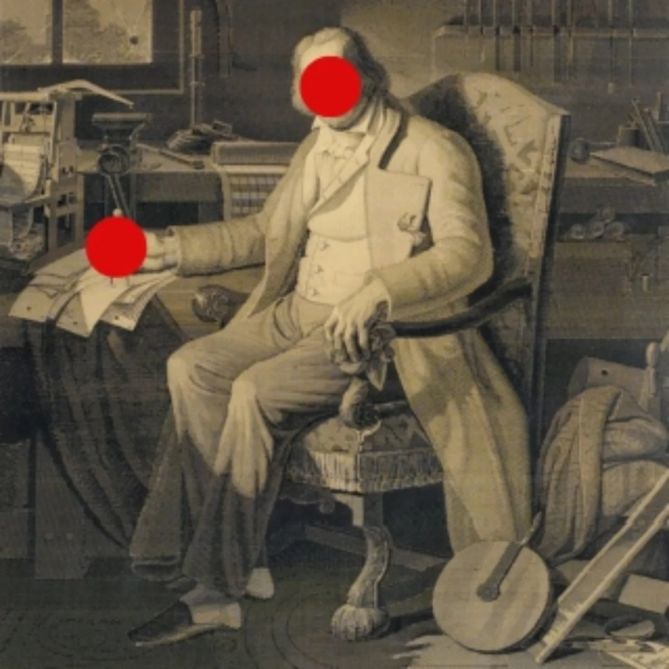
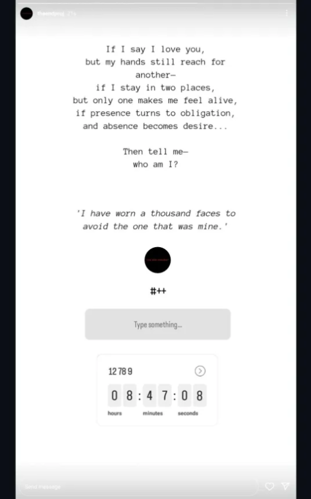
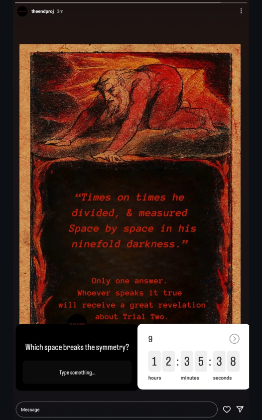

The END Project: Architecture of Reason
The Intersection of Industrial History and Digital Mysticism
In the early months of 2025, a new shadow appeared on the digital horizon. It didn't emerge from the chaotic boards of the deep web, but from the polished grids of Instagram. The END Project quickly drew the attention of solvers worldwide, presenting a mystery that feels simultaneously ancient and cutting-edge.

Fig 1. A verified transmission fragment from the early Instagram phase.
While it shares the cryptographic DNA of predecessors like Cicada 3301 and S.V.V., The END Project is unique in its design—a meticulously architected descent into the "Architecture of Reason."
Webpages Hidden in the Ether
Solving the initial clues of The END Project isn't just about cracking a code; it's about gaining access. The trail leads investigators to a series of hidden webpages and subpages, each locked behind complex passwords that require more than just a search engine to break.
These pages serve as digital vaults. Inside, solvers find more than just the next riddle. They discover The END project artifacts—fragments of digital data that often contain clues not just for the next stage of the project, but for other unsolved mysteries of the internet age. It is a mystery that acknowledges its own place in a larger history of digital puzzles.
Fragments of the Loom
Digital artifacts from The END Project are often transmitted through brief, intense visual bursts. These "fragments" contain the keys to the next layer of the architecture.
A Blend of Five Worlds
What sets The END Project apart is its dense, atmospheric aesthetic. It is a tapestry woven from five distinct threads:
The sounds of clicking looms and the hiss of steam engines serve as the rhythmic backdrop to the mystery.
Clues often harken back to the works of Babbage, Lovelace, and the original Jacquard loom.
Lines from Keats, Shelley, and Byron aren't just for flavor; they are the semantic keys to the ciphers.
The project explores the boundary between logic and the unknown, treating computation as a form of modern alchemy.
The mathematical precision of Bach and the emotional depth of Beethoven provide the sonic structure for the puzzles.
"We are not merely solving a puzzle; we are witnessing the ghost in the loom, the reason in the machine."

"The Ancient of Days" — A recurring symbol in the project's exploration of mysticism and the architect of logic.
Architecture vs. Recruitment
Unlike Cicada, which sought "highly intelligent individuals," or SVV, which functions as a clandestine society with a strict hierarchy, The END Project feels like an exploration of the limits of human reasoning. It utilizes "impossible" logic gates and semiotic challenges, forcing players to think not just as programmers, but as philosophers.
It represents a different kind of digital rabbithole—one where the prize isn't membership, but a deeper understanding of the structures of thought itself.
A Vanishing Act
After months of intense activity and cryptic breakthroughs, The END Project entered a period of profound silence. On December 17, 2025, the project shared its final Instagram story—a single, haunting image that seemed to both reassure and warn the community.

The final verified story: "We are still here."
Shortly after this transmission, the main website went offline. What was once a vibrant "Architecture of Reason" became a digital graveyard of broken links and expired domains. Since that December day, there has been no direct communication from the creators.
Despite the silence, the project's digital footprints remain. Their Instagram page and YouTube channel are still standing—monuments to a mystery in suspension—while an associated X (Twitter) account remains entirely unused, a dormant node in an incomplete network.
The Loom Still Turns?
As of May 2026, the question remains: is the project finished, or is it merely resting in a long-form hibernation? Each discovery in the past only revealed more layers, leaving solvers to wonder if the silence itself is the final "artifact"—the ultimate test of persistence.
For those who still watch the unused accounts and dead links, the mystery persists. In the world of The END, silence is never empty; it is simply another cipher waiting for the right key.